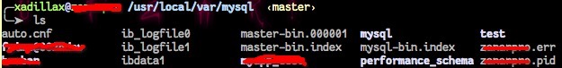

初探 MySQL 的 Binlog
花瓣网的搜索架构需要重构，尤其是在索引建立或者更新层面。
目前的一个架构导致的结果就是时间越久，数据本体与搜索引擎索引中的数据越不同步，相差甚大。
新的一个架构打算从 MySQL 的 Binlog 中读取数据更新、删除、新增等历史记录，并把相应信息提取出来丢到队列中慢慢去同步。
所以我就在这里小小去了解一下 Binlog。
准备工作
什么是 Binlog
MySQL Server 有四种类型的日志——Error Log、General Query Log、Binary Log 和 Slow Query Log。
第一个是错误日志，记录 mysqld 的一些错误。第二个是一般查询日志，记录 mysqld 正在做的事情，比如客户端的连接和断开、来自客户端每条 Sql Statement 记录信息；如果你想准确知道客户端到底传了什么瞎 [哔哔] 玩意儿给服务端，这个日志就非常管用了，不过它非常影响性能。第四个是慢查询日志，记录一些查询比较慢的 SQL 语句——这种日志非常常用，主要是给开发者调优用的。
剩下的第三种就是 Binlog 了，包含了一些事件，这些事件描述了数据库的改动，如建表、数据改动等，也包括一些潜在改动，比如 DELETE FROM ran WHERE bing = luan，然而一条数据都没被删掉的这种情况。除非使用 Row-based logging，否则会包含所有改动数据的 SQL Statement。
那么 Binlog 就有了两个重要的用途——复制和恢复。比如主从表的复制，和备份恢复什么的。
启用 Binlog
通常情况 MySQL 是默认关闭 Binlog 的，所以你得配置一下以启用它。
启用的过程就是修改配置文件 my.cnf 了。
至于 my.cnf 位置请自行寻找。例如通过 OSX 的 brew 安装的 mysql 默认配置目录通常在
/usr/local/Cellar/mysql/$VERSION/support-files/my-default.cnf
这个时候需要将它拷贝到 /etc/my.cnf 下面。
紧接着配置 log-bin 和 log-bin-index 的值，如果没有则自行加上去。
log-bin=master-bin |
这里的 log-bin 是指以后生成各 Binlog 文件的前缀，比如上述使用 master-bin，那么文件就将会是 master-bin.000001、master-bin.000002 等。而这里的 log-bin-index 则指 binlog index 文件的名称，这里我们设置为 master-bin.index。
如果上述工作做完之后重启 MySQL 服务，你可以进入你的 MySQL CLI 验证一下是否真的启用了。
$ mysql -u $USERNAME ... |
然后在终端里面输入下面一句 SQL 语句：
SHOW VARIABLES LIKE '%log_bin%'; |
如果结果里面出来这样类似的话就表示成功了：
+---------------------------------+---------------------------------------+ |
更多的一些相关配置可以参考这篇《MySQL 的 binary log 初探》。
随便玩玩
然后你就可以随便去执行一些数据变动的 SQL 语句了。当你执行了一堆语句之后就可以看到你的 Binlog 里面有内容了。
如上表所示，log_bin_basename 的值是 /usr/local/var/mysql/master-bin 就是 Binlog 的基础文件名了。
那我们进去看，比如我的这边就有这么几个文件：

很容易发现，里面有 master-bin.index 和 master-bin.000001 两个文件，这两个文件在上文中有提到过了。
我们打开那个 master-bin.index 文件，会发现这个索引文件就是一个普通的文本文件，然后列举了各 binlog 的文件名。而 master-bin.000001 文件就是一堆乱码了——毕竟人家是二进制文件。
结构解析
索引文件
索引文件就是上文中的 master-bin.index 文件，是一个普通的文本文件，以换行为间隔，一行一个文件名。比如它可能是：
master-bin.000001 |
然后对应的每行文件就是一个 Binlog 实体文件了。
Binlog 文件
Binlog 的文件结构大致由如下几个方面组成。
文件头
文件头由一个四字节 Magic Number，其值为 1852400382，在内存中就是 "\xfe\x62\x69\x6e"，参考 MySQL 源码的 log_event.h，也就是 '\0xfe' 'b' 'i' 'n'。
与平常二进制一样，通常都有一个 Magic Number 进行文件识别，如果 Magic Number 不吻合上述的值那么这个文件就不是一个正常的 Binlog。
事件
在文件头之后，跟随的是一个一个事件依次排列。每个事件都由一个事件头和事件体组成。
事件头里面的内容包含了这个事件的类型（如新增、删除等）、事件执行时间以及是哪个服务器执行的事件等信息。
第一个事件是一个事件描述符，描述了这个 Binlog 文件格式的版本。接下去的一堆事件将会按照第一个事件描述符所描述的结构版本进行解读。最后一个事件是一个衔接事件，指定了下一个 Binlog 文件名——有点类似于链表里面的 next 指针。
根据《High-Level Binary Log Structure and Contents》所述，不同版本的 Binlog 格式不一定一样，所以也没有一个定性。在我写这篇文章的时候，目前有三种版本的格式。
- v1，用于 MySQL 3.2.3
- v3，用于 MySQL 4.0.2 以及 4.1.0
- v4，用于 MySQL 5.0 以及更高版本
实际上还有一个 v2 版本，不过只在早期 4.0.x 的 MySQL 版本中使用过，但是 v2 已经过于陈旧并且不再被 MySQL 官方支持了。
通常我们现在用的 MySQL 都是在 5.0 以上的了，所以就略过 v1 ~ v3 版本的 Binlog，如果需要了解 v1 ~ v3 版本的 Binlog 可以自行前往上述的《High-level…》文章查看。
事件头
一个事件头有 19 字节，依次排列为四字节的时间戳、一字节的当前事件类型、四字节的服务端 ID、四字节的当前事件长度描述、四字节的下个事件位置（方便跳转）以及两字节的标识。
用 ASCII Diagram 表示如下：
+---------+---------+---------+------------+-------------+-------+ |
也可以字节编造一个结构体来解读这个头：
struct BinlogEventHeader |
如果你要直接用这个结构体来读取数据的话，需要加点手脚。
因为默认情况下 GCC 或者 G++ 编译器会对结构体进行字节对齐，这样读进来的数据就不对了，因为 Binlog 并不是对齐的。为了统一我们需要取消这个结构体的字节对齐，一个方法是使用
#pragma pack(n)，一个方法是使用__attribute__((__packed__))，还有一种情况是在编译器编译的时候强制把所有的结构体对其取消，即在编译的时候使用fpack-struct参数，如：
根据上述的结构我们可以明确得到各变量在结构体里面的偏移量，所以在 MySQL 源码里面（libbinlogevents/include/binlog_event.h）有下面几个常量以快速标记偏移：
而具体有哪些事件则在 libbinlogevents/include/binlog_event.h#L245 里面被定义。如有个 FORMAT_DESCRIPTION_EVENT 事件的 type_code 是 15、UPDATE_ROWS_EVENT 的 type_code 是 31。
还有那个 next_position，在 v4 版本中代表从 Binlog 一开始到下一个事件开始的偏移量，比如到第一个事件的 next_position 就是 4，因为文件头有一个字节的长度。然后接下去对于事件 n 和事件 n + 1 来说，他们有这样的关系：
next_position(n + 1) = next_position(n) + event_length(n)
关于 flags 暂时不需要了解太多，如果真的想了解的话可以看看 MySQL 的相关官方文档。
事件体
事实上在 Binlog 事件中应该是有三个部分组成，header、post-header 和 payload，不过通常情况下我们把 post-header 和 payload 都归结为事件体，实际上这个 post-header 里面放的是一些定长的数据，只不过有时候我们不需要特别地关心。想要深入了解可以去查看 MySQL 的官方文档。
所以实际上一个真正的事件体由两部分组成，用 ASCII Diagram 表示就像这样：
+=====================================+ |
而这个 post-header 对于不同类型的事件来说长度是不一样的，同种类型来说是一样的，而这个长度的预先规定将会在一个“格式描述事件”中定好。
格式描述事件
在上文我们有提到过，在 Magic Number 之后跟着的是一个格式描述事件（Format Description Event），其实这只是在 v4 版本中的称呼，在以前的版本里面叫起始事件（Start Event）。
在 v4 版本中这个事件的结构如下面的 ASCII Diagram 所示。
+=====================================+ |
这个事件的 type_code 是 15，然后 event_length 是大于等于 91 的值的，这个主要取决于所有事件类型数。
因为从第 76 字节开始后面的二进制就代表一个字节类型的数组了，一个字节代表一个事件类型的 post-header 长度，即每个事件类型固定数据的长度。
那么按照上述的一些线索来看，我们能非常快地写出一个简单的解读 Binlog 格式描述事件的代码。
如上文所述，如果需要正常解读 Binlog 文件的话，下面的代码编译时候需要加上
-fpack-struct=1这个参数。
|
这个时候你得到的结果有可能就是这样的了：
1852400382 - �binpz� |
一共会输出 40 种类型（从 1 到 40），如官方文档所说，这个数组从 START_EVENT_V3 事件开始（type_code 是 1）。
跳转事件
跳转事件即 ROTATE_EVENT，其 type_code 是 4，其 post-header 长度为 8。
当一个 Binlog 文件大小已经差不多要分割了，它就会在末尾被写入一个 ROTATE_EVENT——用于指出这个 Binlog 的下一个文件。
它的 post-header 是 8 字节的一个东西，内容通常就是一个整数 4，用于表示下一个 Binlog 文件中的第一个事件起始偏移量。我们从上文就能得出在一般情况下这个数字只可能是四，就偏移了一个魔法数字。当然我们讲的是在 v4 这个 Binlog 版本下的情况。
然后在 payload 位置是一个字符串，即下一个 Binlog 文件的文件名。
各种不同的事件体
由于篇幅原因这里就不详细举例其它普通的不同事件体了，具体的详解在 MySQL 文档中一样有介绍，用到什么类型的事件体就可以自己去查询。
小结
本文大概介绍了 Binlog 的一些情况，以及 Binlog 的内部二进制解析结构。方便大家造轮子用——不然老用别人的轮子，只知其然而不知其所以然多没劲。
好了要下班了，就写到这里过吧。
参考
- MySQL’s binary log 结构简介，目测原文在 TaobaoDBA（已无法访问）
- MySQL Binlog 的介绍
- MySQL 的 binary log 初探
- High-Level Binary Log Structure and Contents and related official documents
- #pragma pack vs -fpack-struct for Intel C